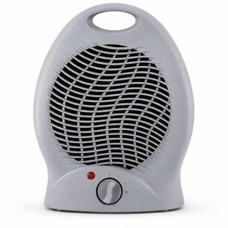

LG ThermalFlow AI Climatização inteligente, conforto instantâneo. O LG ThermalFlow AI reinventa o aquecimento residencial ao combinar a tecnologia Inverter V de alta eficiência com o algoritmo LG ThinQ AI. Projetado com um painel frontal em vidro temperado preto e acabamento em alumínio escovado, ele integra sofisticação e desempenho para os dias mais frios. Destaques do Produto Aquecimento Ultra-Rápido (Dual Blade Heat): O sistema de aletas duplas direciona o fluxo de ar quente diretamente para o piso, fazendo com que o calor suba naturalmente e preencha todo o ambiente em até 3 minutos. Inteligência Artificial ThinQ AI: O aquecedor aprende sua rotina diária e ajusta automaticamente a temperatura ideal com base nas suas preferências e nas condições climáticas externas. Economia Extrema (Inverter V): Ajusta o consumo de energia de forma contínua, reduzindo os custos de eletricidade em até 60% comparado aos aquecedores resistivos tradicionais. Silêncio Absoluto (Whisper Mode): Operação ultra-silenciosa a apenas 19 dB, ideal para noites de sono seguras e tranquilas. Proteção e Saúde UVnano™: Lâmpadas UV-LED internas eliminam 99,9% das bactérias e vírus do ar que circula pelo aparelho, garantindo um aquecimento limpo e livre de odores.